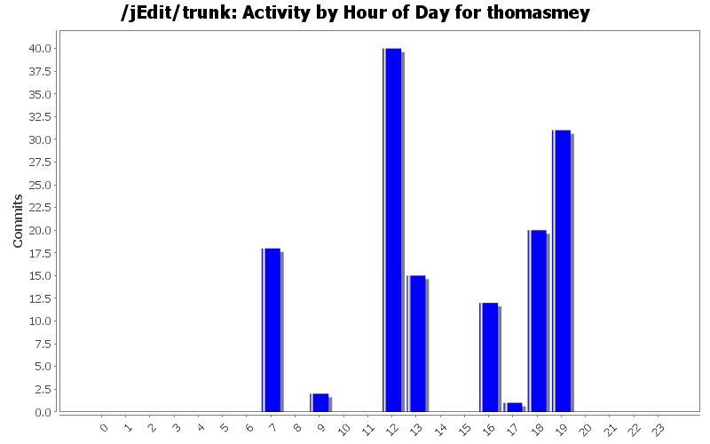
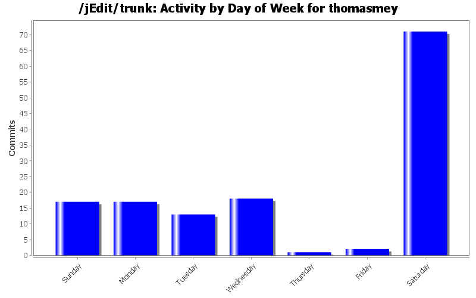
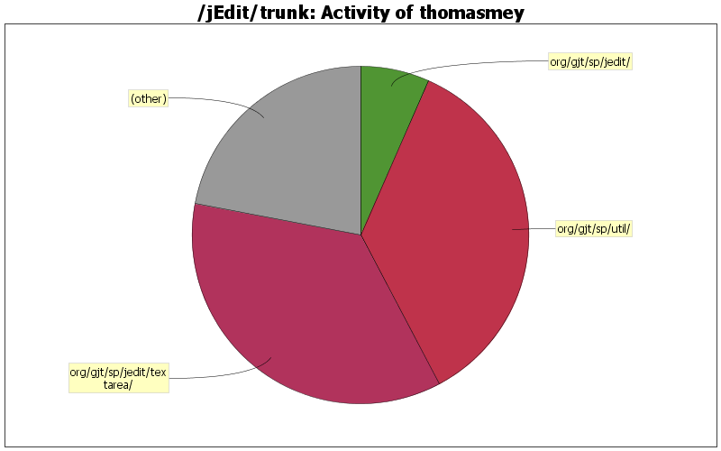

| Directory | Changes | Lines of Code | Lines per Change |
|---|---|---|---|
| Totals | 139 (100.0%) | 2120 (100.0%) | 15.2 |
| org/gjt/sp/jedit/textarea/ | 23 (16.5%) | 758 (35.8%) | 32.9 |
| org/gjt/sp/util/ | 23 (16.5%) | 754 (35.6%) | 32.7 |
| org/gjt/sp/jedit/ | 13 (9.4%) | 141 (6.7%) | 10.8 |
| org/gjt/sp/jedit/gui/ | 13 (9.4%) | 87 (4.1%) | 6.6 |
| org/gjt/sp/jedit/browser/ | 11 (7.9%) | 79 (3.7%) | 7.1 |
| org/gjt/sp/jedit/bufferio/ | 12 (8.6%) | 77 (3.6%) | 6.4 |
| org/gjt/sp/jedit/search/ | 17 (12.2%) | 63 (3.0%) | 3.7 |
| doc/ | 6 (4.3%) | 47 (2.2%) | 7.8 |
| org/gjt/sp/jedit/options/ | 1 (0.7%) | 45 (2.1%) | 45.0 |
| org/gjt/sp/jedit/io/ | 9 (6.5%) | 35 (1.7%) | 3.8 |
| org/gjt/sp/jedit/print/ | 1 (0.7%) | 21 (1.0%) | 21.0 |
| org/gjt/sp/jedit/gui/statusbar/ | 2 (1.4%) | 6 (0.3%) | 3.0 |
| org/jedit/options/ | 2 (1.4%) | 4 (0.2%) | 2.0 |
| org/jedit/keymap/ | 1 (0.7%) | 1 (0.0%) | 1.0 |
| org/gjt/sp/jedit/syntax/ | 2 (1.4%) | 1 (0.0%) | 0.5 |
| macros/Files/ | 1 (0.7%) | 1 (0.0%) | 1.0 |
| org/jedit/localization/ | 1 (0.7%) | 0 (0.0%) | 0.0 |
| org/jedit/core/ | 1 (0.7%) | 0 (0.0%) | 0.0 |

Fix mode loading for temporary buffers
65 lines of code changed in 8 files:
Fix bug #3598661 - Don't allow negative values in the general option pane.
49 lines of code changed in 3 files:
Update doc/CHANGES.txt
12 lines of code changed in 1 file:
TaskManager: Refactor io Task: Add missing IoTask class.
7 lines of code changed in 1 file:
TaskManager: Refactor IoTask
- Make IoTask a subclass of Task and remove the code of the special case.
42 lines of code changed in 7 files:
HyperSearch: Make search interruptible even when in VFS.listFiles()
- API change: Introduce an TaskManager.cancelTasksByClass() method, that
will interrupt all currently running Tasks of the given type.
35 lines of code changed in 4 files:
Make SearchMatcher interrupttible:
1.) API change: let SearchMatcher.nextMatch() throw InterruptedException
2.) BoyerMooreSearchMatcher: Switch to the new API and react on thread
interruption
38 lines of code changed in 4 files:
Java is very backward compatible! I better use a real JDK6...
5 lines of code changed in 1 file:
More clean ups
47 lines of code changed in 15 files:
Clean up RegisterViewer a bit
16 lines of code changed in 1 file:
1. Revert class -> enum conversion of TaskManager
2. Fix warnings in jEdit class
84 lines of code changed in 17 files:
Fix bug 3596616 - Macro Files/Insert_Selection.bsh
13 lines of code changed in 2 files:
Fix performance revealed in bug #3590540, patch #3595304
98 lines of code changed in 6 files:
Document fixes for #3590540 in CHANGES.TXT
4 lines of code changed in 1 file:
Fix bug #3590540 - The patch exchanges short with char type in ScreenLineManager. The new maximum screen lines a physical line can have is now 65535 lines for soft wrap mode
21 lines of code changed in 1 file:
Fix javadoc warning in MiscUtilities
2 lines of code changed in 1 file:
several small fixes: spelling, unused imports, use createVFSSessionSafe in DirectoryListSet
0 lines of code changed in 6 files:
Fix German translation
0 lines of code changed in 1 file:
Fix bugs 2832769, 2998294, and 3193168 - Hopefully nothing else breaks by this invasive change. *Somebody* should create some unit tests to transform fear into boredeom...
626 lines of code changed in 8 files:
Document API changes for patches:
1.) r22109 - Convert WorkRequest to be more like a Task. Patch 3556968.
2.) r22110 - Finish conversion of WorkRequest users to Task API. Patch 3556973
3.) r22164 - Clean up conversion to Task API. Patch 3560625.
14 lines of code changed in 1 file:
(3 more)